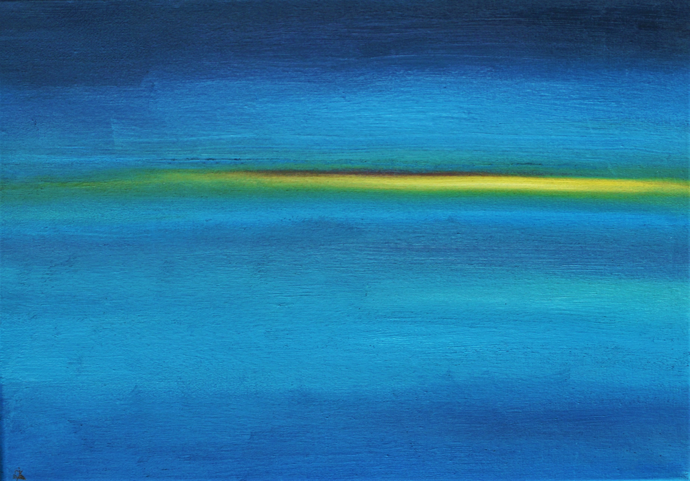
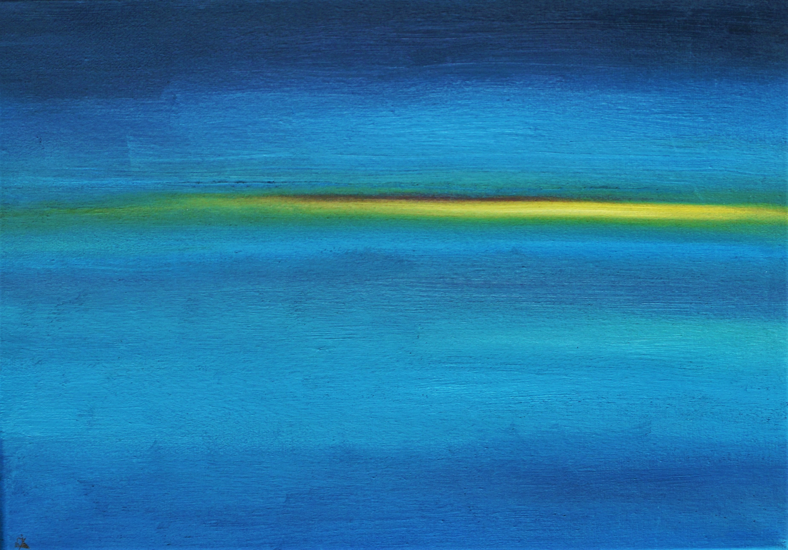
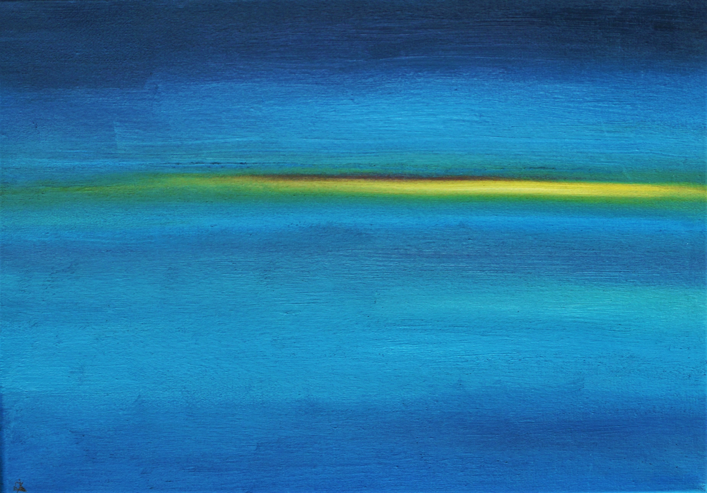

Галерея
Обо мне
Пейзаж с жёлтой
полосой

17.08.21 Холст на подрамнике 30х40, масло
В этот раз моей задачей было создание абстрактного, но еще читаемого пейзажа.
Полотно словно светится изнутри. Лазурная морская гладь и мягко тающий желтый
всполох, брошенный лучем закатного солнца. Фактура также интересна. Тонкие
полосы на густой краске, оставленные кистью, напоминающие еле заметную рябь
на поверхности воды, что вызвана легким дуновением ветерка. И все-таки
присутствует ощущение динамики.
 

 17.08.21 Холст на подрамнике 30х40, масло
В этот раз моей задачей было создание абстрактного, но еще читаемого пейзажа.
17.08.21 Холст на подрамнике 30х40, масло
В этот раз моей задачей было создание абстрактного, но еще читаемого пейзажа.